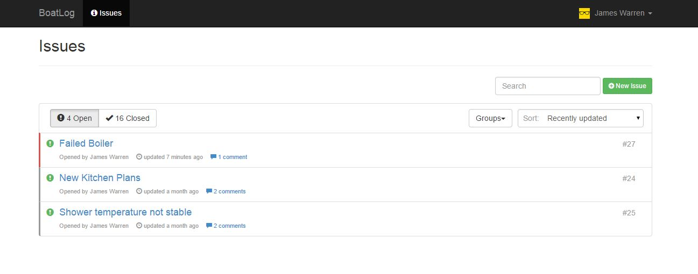
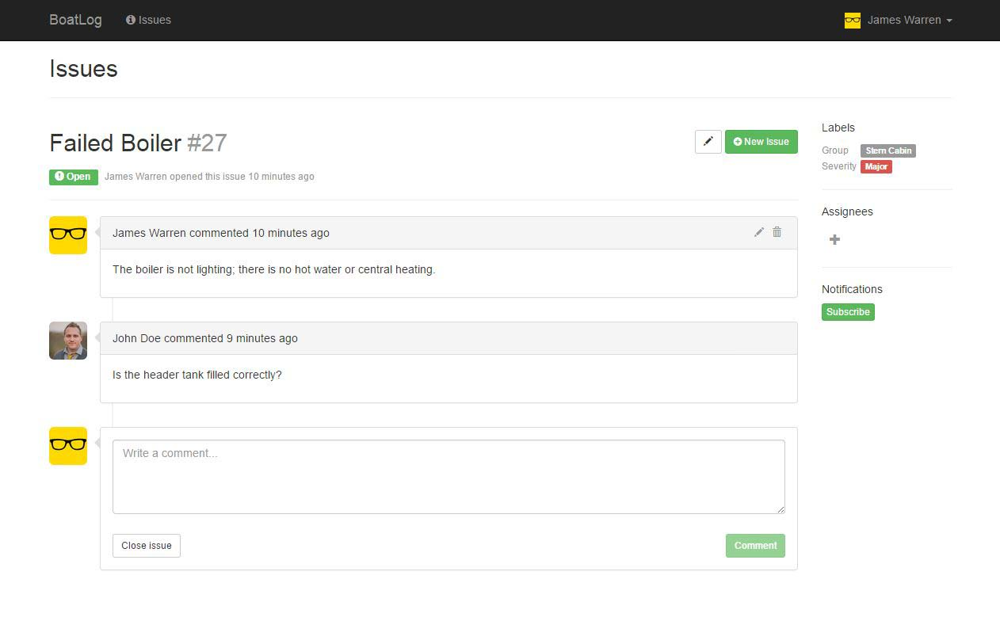

Issue Log
The issue log provides a central hub for members to report faults and maintenance queries.
Issue Details
Users can track an issues status through comments. Once resolved an issue can be marked as closed.
Technology Stack
- Angular.js - front-end web framework
- Sails.js - MVC web framework for Node.js
- Node.js / Express.js
- MySQL database
FirstMate makes use of web sockets to enable real-time interactions and a collaborative user experience.


What's Next?
FirstMate is young, we see it as a proof-of-concept at this stage. We hope to complete user testing on the current feature set in the next month.
Future key goals on our roadmap include:
- Cruise logs and reporting
- New UI design